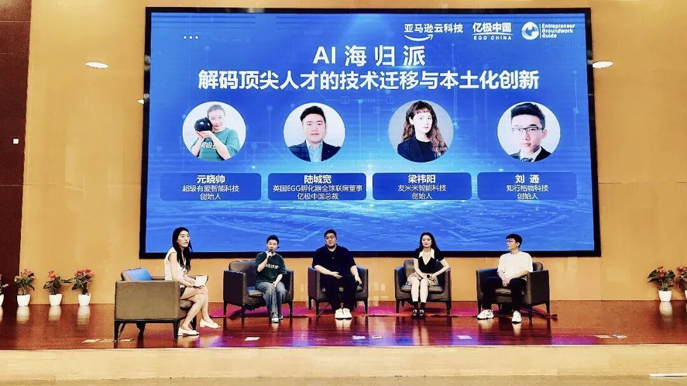
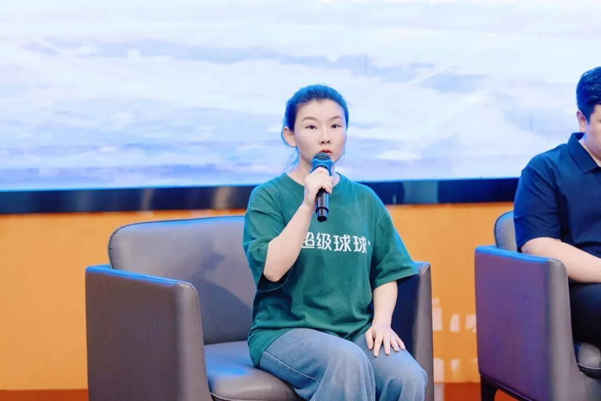

元晓帅：我们的公司叫超级有爱，专注于AI⼼理健康和情绪疗愈。“超级球球”是我们⾃主研发⽣产的桌⾯具⾝智能，也是⽤⼾与⼈⼯智能交互的界⾯。
它具备⼀个⼼理咨询师的基础能⼒，通过陪伴的⽅式，检测⽤⼾的情绪状况，给予情绪价值，提供情绪疏导，帮助⽤⼾做到情绪的释放。
在⼼理健康领域，我们团队有超过20年的经验。那么AI是如何影响这个领域的？我想给⼤家分享⼏个数据：根据公开数据报告，2022年中国患抑郁症⼈数约9500万，其中50%是在校⽣，⽽就诊率不到10%。因为专业服务资源严重匮乏，中国⽬前⼼理咨询师的缺⼝超过130万，⽽且资源分布不均。
传统的⼼理咨询，花费较⾼，⽽且时间也不好预约，⼤部分⼈在极端情绪发⽣的时候，很难得到及时疏导。我们团队对此感到⾮常痛⼼。
2022年，LLM的出现，让我们看到了⽤技术解决这个时代难题的可能性。所以我们开始调研、研发、测试，经过了多轮试错后，确定了以AI疗愈模型+桌⾯机器⼈交互的产品形态。
今年“五·⼀”我们的产品Demo⾸次⾯世，得到了很多⽤⼾的喜爱。⽬前除了每⽇的AI训练测试外，我们的智能硬件也进⼊了量产交付阶段。
8⽉27⽇，我们的量产产品，将在IOTE国际物联⽹⼤会上⾸次亮相。第⼀批量产产品，预计于9⽉15⽇陆续交付到⽤⼾⼿中。第⼆批万级别的交付，也将在今年的第四季度陆续完成。
我们希望通过通过我们的产品，让每⼀个⼈的情绪疗愈触⼿可及！这是我们的愿景。
主持⼈：超级有爱的“轻疗愈”产品定位于现代⼈情绪释放的刚需，您感觉现在产品以及相关技术壁垒，国外与国内有差距吗？
元晓帅：情绪疗愈与⽂化有着极为密切的关联。⽂化差异会带来⽤⼾认知、表达、⾏为模式、情绪处理习惯等多⽅⾯的差异。所以国内外市场，情绪疗愈的路径和⽅式是不同的。
举⼀个简单的例⼦： 东亚地区（包括中国）的⼤部分⼈，对⾃⼰的情绪问题是有明显的病耻感的，⽽这在欧美的⽐例要⼩很多，我们在做针对国内的产品时，就考虑到了要带给⽤⼾安全感、私密感。
产品⽅⾯，欧美的同⾏们更侧重于专业的⼼理⼲预，⽐如Woebot，就是基于认知⾏为疗法原理，通过问答引导⽤⼾重构认知模式。我们在中国市场，更重视疗愈的体验，聚焦给出适合本⼟化应⽤场景的、即时的、有效的疗愈⽅案。
“超级球球”的产品前期，⽆论是形态还是定价，都充分考虑到了中国市场的特点。简单说，中国市场给了我们更⼤的机会。

主持⼈：中国市场的独特性，为Agentic技术创造了哪些欧美不具备的“破局场景”？如何运⽤海外的资源和知识在中国进⾏迭代，加速取⻓补短？
元晓帅：中外市场对Agentic技术的影响，主要来⾃于对差异化的解决⽅案的需求。
⽐如：欧美⼼理疗愈多聚焦于个体⼲预。但在中国，情绪问题与家庭、职场等社会关系深度绑定，所以需要智能体具备跨⻆⾊协作能⼒，要能提供在复杂关系中的解决⽅案。
另⼀个例⼦是，因为中国的⽂化特点，⽤⼾习惯通过⾮直接的语⾔去表达情绪。所以Agent对环境、信息、线索的识别、解读要更细微。
我们在做的事情，是将欧美的专业临床⼯具，转化为了⽣活中触⼿可及的陪伴，能更好地平衡专业性与⽤⼾体验。
总之，我认为在AI⼼理疗愈领域，中国⼀定不是去复刻欧美AI⼼理医⽣的模式，⽽是要做更懂东⽅⼈情绪流动逻辑、更能穿透社会关系⽹络、更⾼效普惠的⼼灵守护者。